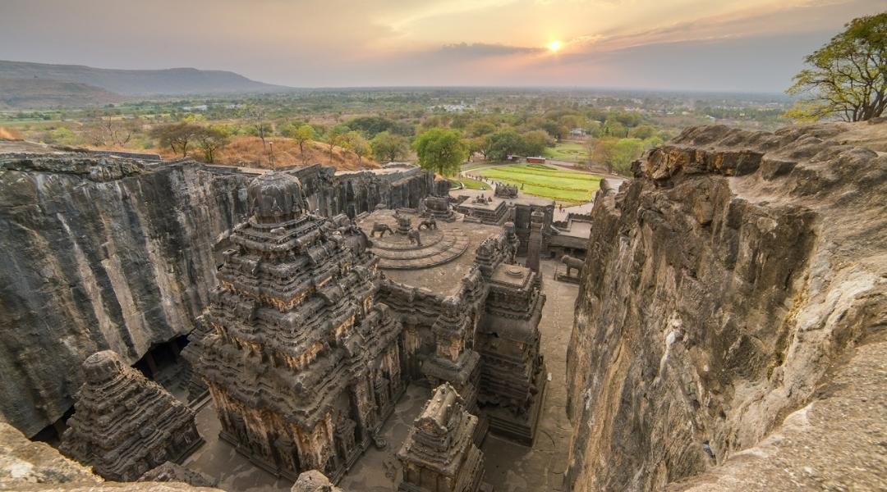

🌐 3 Jyotirlinga Darshan Cab Service from Pune | A S Travel Solution
🕉️ Comfortable & Spiritual 3 Jyotirlinga Tour from Pune
Looking for a peaceful and well-planned 3 Jyotirlinga Darshan from Pune? A S Travel Solution provides reliable and comfortable cab services for visiting the three sacred Jyotirlingas in Maharashtra — Bhimashankar, Trimbakeshwar, and Grishneshwar. Enjoy a smooth spiritual journey with our experienced drivers and well-maintained AC vehicles.
🙏 About 3 Jyotirlinga in Maharashtra
Maharashtra is home to three of the 12 sacred Jyotirlingas of Lord Shiva:
- 🛕 Bhimashankar (Pune)
- 🛕 Trimbakeshwar (Nashik)
- 🛕 Grishneshwar (Sambhajinagar / Ellora)
These temples are highly revered and visited by thousands of devotees every year for blessings, peace, and spiritual growth.
🚘 Our 3 Jyotirlinga Cab Services
We offer complete travel solutions:
- ✅ One Way / Round Trip
- ✅ 2-3 Days Tour Package
- ✅ Custom Darshan Plan
- ✅ Outstation Cab Service
🚗 Available Vehicles
- 🚘 Dzire (Budget)
- 🚙 Ertiga (Family)
- 🚐 Innova (Premium / Group)
- ✔ Clean & AC cars
- ✔ Comfortable journey
- ✔ Safe driving
⭐ Why Choose A S Travel Solution?
- 🔹 Reliable Service - Always on-time pickup & drop
- 🔹 Experienced Drivers - Knowledge of temple routes & timings
- 🔹 Affordable Pricing - No hidden charges
- 🔹 24/7 Booking Support - Call or WhatsApp anytime
- 🔹 Safe Travel - Verified drivers & maintained vehicles
🛕 1. Bhimashankar Jyotirlinga
📍 Location: Near Pune (Sahyadri Hills)
⭐ Highlights:
- Surrounded by forest & wildlife sanctuary
- Origin of Bhima River
- Perfect mix of nature & spirituality
🚗 Distance: Approx. 110 km from Pune
🛕 2. Trimbakeshwar Jyotirlinga
📍 Location: Near Nashik
⭐ Highlights:
- Origin of Godavari River
- Unique Shiva Linga with three faces
- Famous for Kaal Sarp & Narayan Nagbali puja
🚗 Distance: Approx. 240 km from Pune
🛕 3. Grishneshwar Jyotirlinga
📍 Location: Near Ellora Caves, Sambhajinagar
⭐ Highlights:
- 12th Jyotirlinga
- Close to UNESCO Ellora Caves
- Beautiful ancient temple
🚗 Distance: Approx. 300 km from Pune
📦 3 Jyotirlinga Tour Package Plan
🗓️ Day 1: Pune → Bhimashankar Darshan → Travel to Nashik
🗓️ Day 2: Trimbakeshwar Darshan → Travel to Sambhajinagar
🗓️ Day 3: Grishneshwar Darshan → Ellora Caves → Return Pune
📏 Distance & Travel Time
Total Distance: ~650-700 km
Duration: 2-3 Days Trip
💰 Affordable Package Pricing
Pricing depends on:
- Car type
- Number of days
- Travel plan
👉 Contact us for best deals & customized packages
📲 Easy Booking Process
- Call / WhatsApp us
- Select vehicle
- Confirm trip plan
- Get instant booking
🔐 Safety & Comfort
- GPS-enabled vehicles
- Regular servicing
- Clean interiors
- Professional drivers
📞 Book 3 Jyotirlinga Darshan Now
Travel peacefully with us.
📲 Call / WhatsApp:
+91 9764642991
+91 9764642921
WhatsApp us for instant booking
⭐ Customer Trust
Trusted by 1000+ happy customers across Maharashtra.